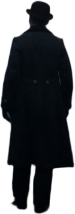

满地都是六便士，他却抬头，看见了月亮。
四十岁 · 证券经纪人 · 伦敦 ·
妻贤子孝 · 生活体面 · 「我必须画画」。
为什么在众多世界名著里选《月亮与六便士》？一句话：它把「理想与安稳」这道人人都要面对的选择题，写得最极端，也最适用于影像表达。
毛姆 1919 年长篇小说代表作，以画家高更为原型，公认「文学史上最疯狂的一次人生出走」。
月亮与六便士 = 理想与现实。冲突强、金句密，天然适合「金句卡 + 旁白」的有声书形态。
伦敦雾夜、巴黎阁楼、塔希提海岛、焚画名场面——场景跨度大、色彩对比强，为 AI 生成素材提供清晰的视觉谱系。

旁白共 18 段，写作原则有三：句子短、多设问、关键处直接引用书籍原文。配音使用微软神经网络男声「云健」纪录片音色，语速 -8%，逐段录制并实测时长——每一段旁白的长度，就是对应镜头的长度。
满地都是六便士，他却抬头，看见了月亮。
他说，我必须画画，就像溺水的人，必须挣扎。
做自己最想做的事，过自己想过的生活，难道就是糟蹋自己吗？
三段摘录覆盖全片三个关键位置：开场钩子、巴黎转折、收尾提问。原句直接引用书籍文本，其余段落全部改写为口语化短句。
逐段配音实测的时长数据反向写回分镜表，形成「文案 → 时长 → 画面」的单向依赖，避免来回改稿。
全文按分镜逐条归档，可在 docs / 旁白脚本_分镜版.txt 查看完整 18 段。
七幕结构，31 段画面零复用。横向滑动浏览每一幕的核心画面——鼠标滚轮自动接管为横移，悬停时画面缓慢推进。
全部素材三类来源：AI 生成油画风视频与插画、自备素材的程序合成 A 大调氛围 BGM。背景音乐与旁白之外的所有画面素材都经过逐帧质检。
前景提取 · 透明 PNG · 亮度提 18% 用于深底排版。
擦除字幕 → 圆掩膜羽化 → trim。
金边引文 · 配说明注解。
说明注解 · 小屋四壁最后的壁画。
全片情绪顶点 · 逐行上屏。
整条流水线是「先定声音，再定画面」：旁白时长即镜头时长，画面永远贴合声音而不是相反。
写 18 段旁白，逐段定分镜、媒体与图文卡的出场时机。
TTS 逐段渲染并测量时长，误差精确到 0.001 秒。
AI 生成油画风视频与插画，逐帧质检不合格即重做。
Remotion 用 React 写视频：Ken Burns 缓推、硬切转场、spring 弹出。
30fps 逐帧渲染 5165 帧，H.264 + AAC，另出 720p 字幕版。
抽帧检查 + 音频电平检测，成片与素材分类归档。
180 秒的程序合成 BGM，A 大调三和弦 pad 之上铺了一串柔和的铃音——刻意避开了"史诗感"，呼应毛姆冷静、不评判的叙述腔调。音量 0.17，5 秒淡入、3 秒淡出，仅在留白处托底，不抢旁白的字句。
合成方式：基频 220Hz 的正弦 + 谐波链 + 慢指数包络，Python 一次性生成 wav，再 ffmpeg 编码入轨。
用代码写视频的框架：分镜、动画、图文卡全部组件化，可随时改参重渲。
男声「云健」纪录片音色，逐段生成 18 段旁白并实测时长。
油画风格提示词体系，产出 16 段视频素材与全部插画。
抽帧检查、音频电平检测、多版本转码与 faststart 优化。
脚本化管理：素材归档、BGM 合成（正弦叠加 + 包络 + 软限幅）。
静态站点：nginx 本地测试后推送 GitHub Pages 发布。
面向「制作系列视频」的长期策略——把这次踩出的形状固化成模板，下次开工时直接复用。
先逐段生成 TTS 并实测时长，把时长数据反向写回分镜表，让画面永远贴合声音而不是相反。
每幕提取主色，整片统一墨蓝 × 暖金调色 + 胶片颗粒，避免片段与片段之间的视觉割裂。
每个 5 秒素材只出现一次；长镜头内部硬切两段；用 Ken Burns 缓推掩盖有限素材的循环感。
下一步用 Whisper 做语音级字幕对齐，告别字符加权近似；字幕版独立导出，保持原版干净。
出场动画的时长、缓动、距离写成可调参数，迁到下一部影片时只换内容不改动画。
视频 / 音频 / 字幕 / BGM / 元数据全部按 01-08 类目独立落盘，制作时按目录拼装即可。